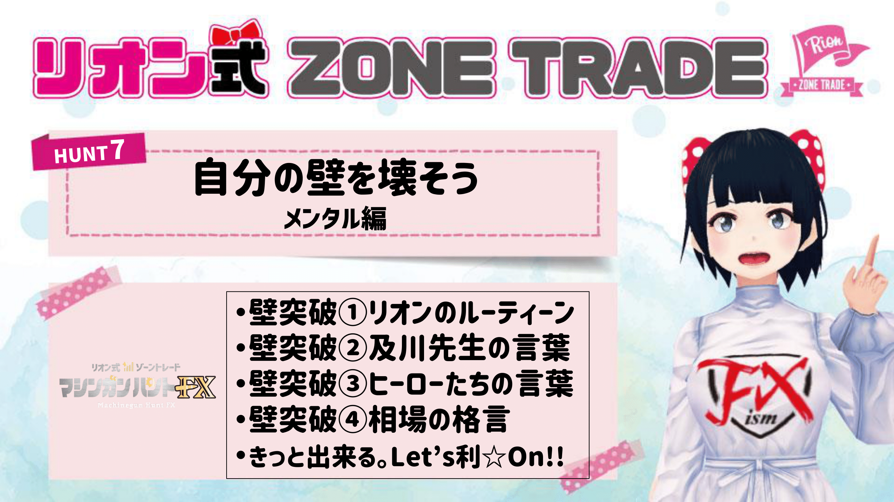
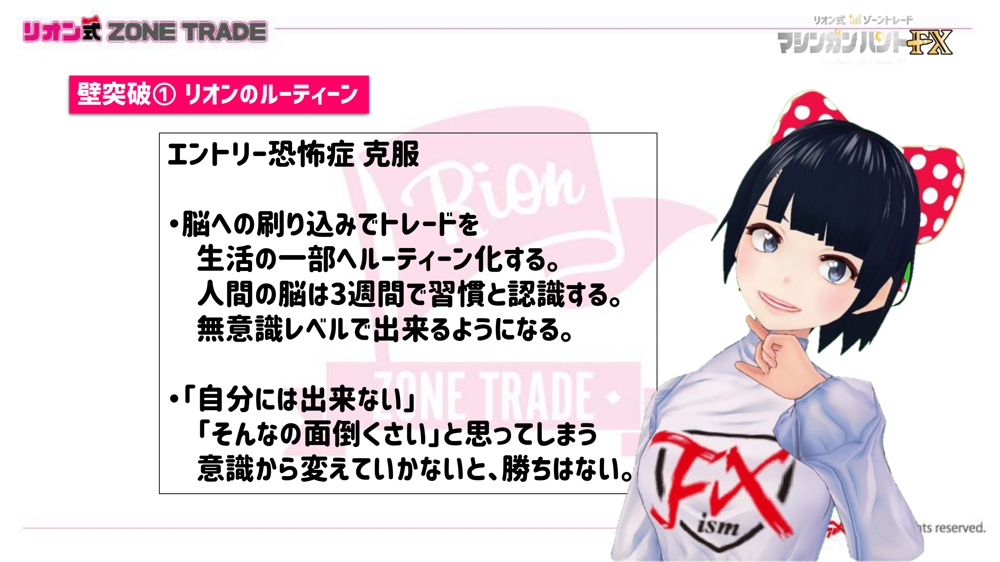
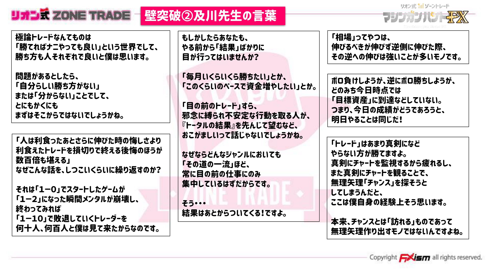
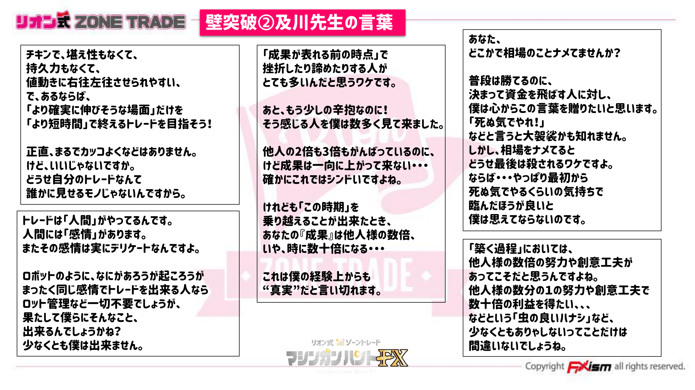
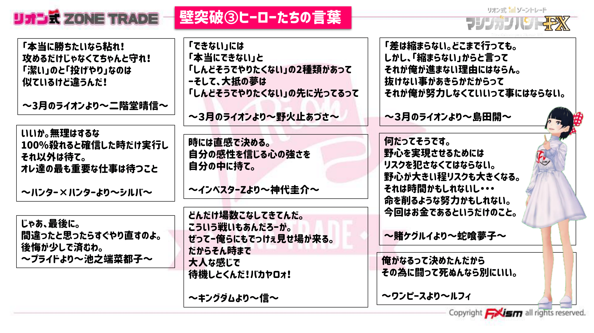
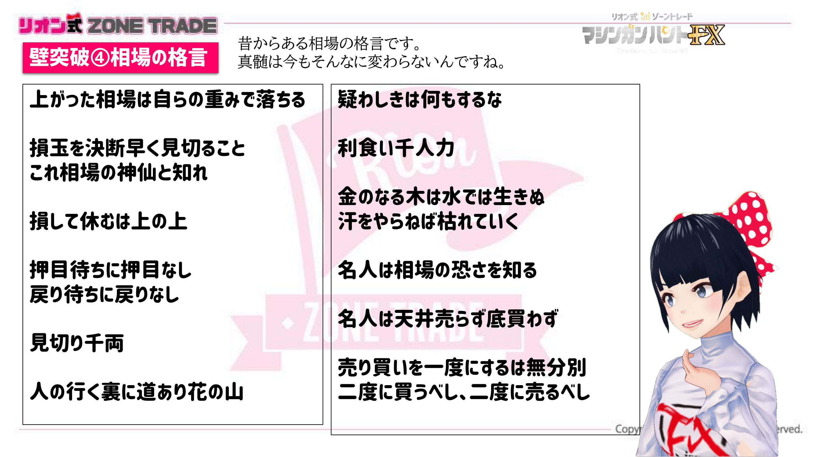
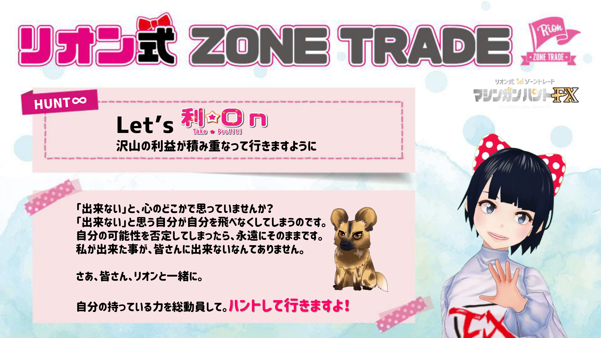

👈👈ギガ速FX_index
👈👈ギガ速FX_index- ページ内のINDEX_test
------------- INDEX_test -------------
1Lot당 얼마나 필요한지 계산 ⇒ Leverage(レバレッジ) 확인
상승추세에서 어떤 대응을 하는지 설명 ⇒ 확인 예제 _CSS에서 a.link-highlight를 사용







MA(이동 평균선)는 중요한 지표로, 트레이딩에서 신뢰할 수 있는 지지 및 저항선을 제공합니다.
이를 통해 실전 트레이딩에서의 성공 가능성을 높일 수 있습니다.